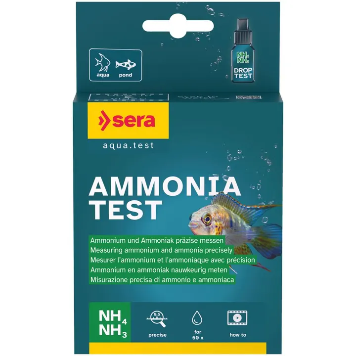
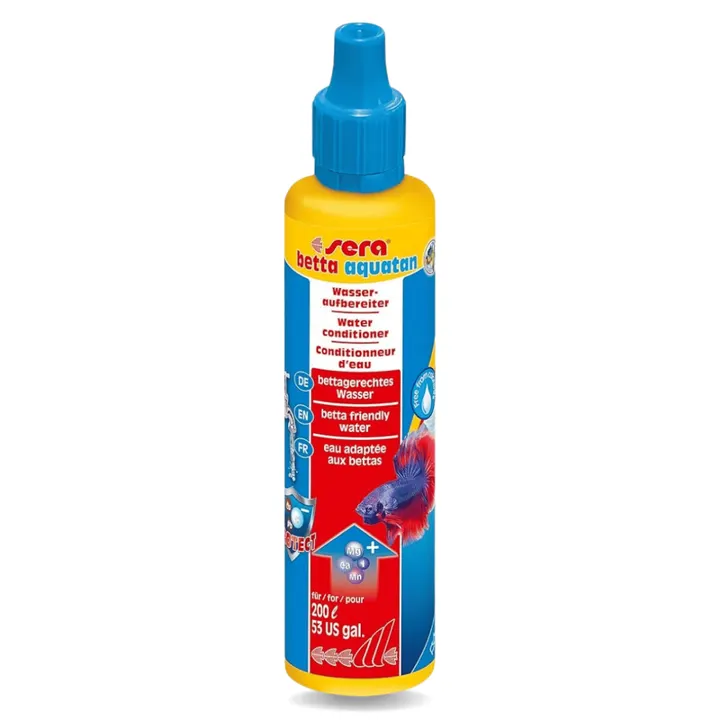

الصورة من مجموعة أكوا هافن01 / 01
العناية ومعالجة المياهعن هذه القطعة ↓
سيرا بيتا أكواتان — محسن مياه لأسماك البيتا
سيرا بيتا أكواتان 50 مل لمعالجة ماء الصنبور قبل استخدامه مع أسماك البيتا، والمساعدة على تحييد الكلور والمواد غير المرغوبة.
٣٩ ر.س
متاح في اللقطةسعر مرجعي للمعاينة. الطلب والدفع غير متاحين في هذه النسخة.
نظرة أقربعن هذه
عن هذه
القطعة.
الوصف والخيارات كما وردت في المجموعة المرجعية.
تفاصيل المنتج
سيرا بيتا أكواتان محسن مياه مخصص لتجهيز ماء الصنبور لأحواض أسماك البيتا قبل إضافته إلى الحوض.
المميزات
- مخصص للعناية بمياه أحواض البيتا
- يساعد على تحييد الكلور والمواد غير المرغوبة في ماء الصنبور
- مناسب عند تعبئة الحوض أو تغييرات الماء
- الحجم: 50 مل
طريقة الاستخدام
أضف الجرعة المحددة على العبوة بحسب كمية الماء الجديدة. وفق بيانات المنتج، عبوة 50 مل تكفي لمعالجة كمية ماء كبيرة عند استخدامها بالجرعة الصحيحة؛ اتبع تعليمات سيرا على العبوة باعتبارها المرجع.
ملاحظة
حافظ على درجة حرارة واستقرار ماء البيتا وراقب الأمونيا والنيتريت والنترات إلى جانب استخدام محسن الماء.